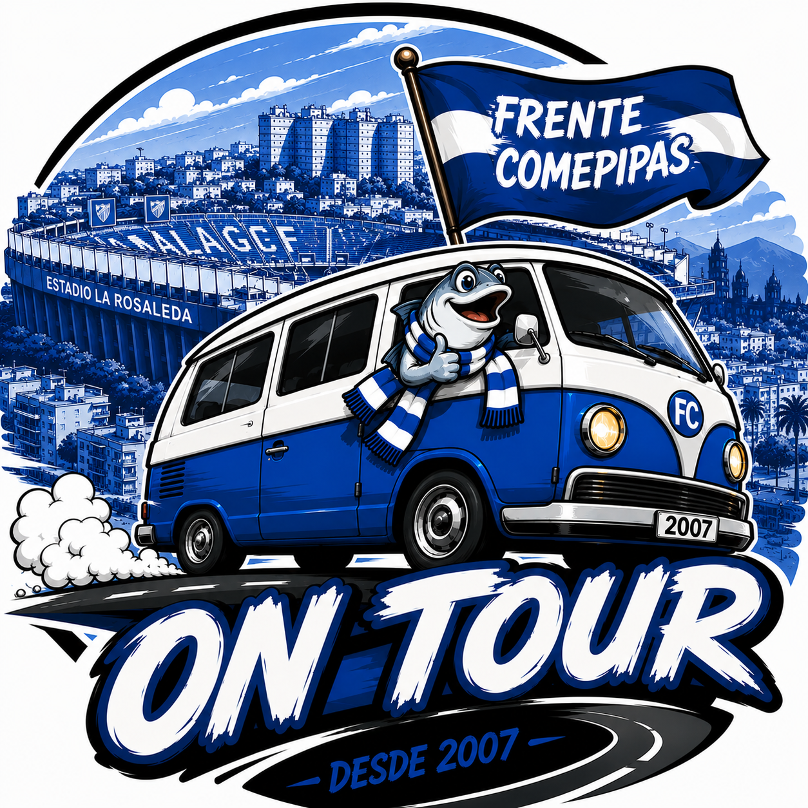

Abrimos el ON TOUR
La pena publica el partido, el estadio, la fecha y el plazo.
Elige un desplazamiento abierto y solicita tus entradas.

Cargando los proximos ON TOUR...
La pena publica el partido, el estadio, la fecha y el plazo.
Puedes pedir tu entrada y la de hasta 3 acompanantes. Pedimos el numero de abonado vigente para comunicarlo al club.
La adjudicacion depende de las entradas entregadas por el rival y de las solicitudes recibidas.